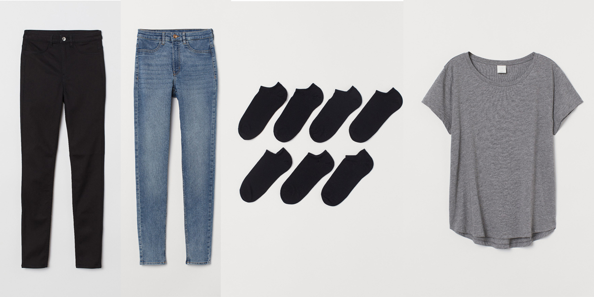
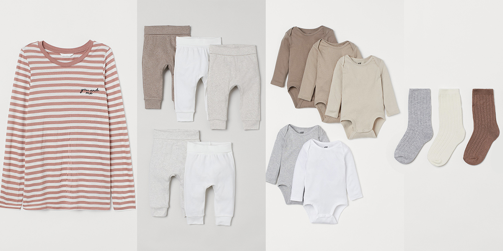

H&M Customer Age Analysis
news
code
analysis
50 year olds shopping at H&M? What’s that all about?
Question
For those who are unfamiliar with H&M, it’s a fast fashion retailer known for its affordable, youthful and trendy styles. I’ve always loved staying current with fashion and who knows? Maybe when I’m 50 I will still be shopping at H&M or similar stores, like Zara. However, even in my 30s, if I venture into H&M I feel noticeably older than everyone else there. So, why are there twice as many 50 year olds as people my age shopping at H&M, and where are they? This led me to question, does age actually matter for trendy stores like H&M that are perceived as ‘younger’? Are the different generational age groups actually purchasing different things? Spoiler alert, they are not. So what does this mean? Who are these 50 year olds and why are their purchase habits similar to the 20 somethings?
Context
This question is important for demographic and marketing research. Traditionally we believe that location, age, gender all matter and make a difference. And… they do. But, humans are complex and context is everything. In order to make appropriate and informed decisions it is important to do proper analysis to make sure we’re not assuming something about someone’s age or gender that ends up being incorrect. For instance, are frequent shoppers purchasing items for themselves or someone else? That is the beauty of data. We can dive in the deep end and really see what is beneath the surface of human bias.
Summary
I began this project with a very different question in mind. However, after starting at the broadest level, my motivation changed. I chose to begin with the age distribution of all the customers in the data set and this is what changed everything. I really only did this to verify my own assumption that it would peak somewhere in the mid 20s and then continue to taper off as age increased. I was definitely surprised to see this somewhat bimodal distribution with a second peak around 52 years old. I remember thinking, “What?? That is so bizarre.” Almost twice as many 50 somethings as 30 somethings seemed just… wrong.
My immediate thought was that it is a group of ‘young at heart’ and fashion conscious 50 year olds. Then, as I looked a little closer at the distribution I did the math and realized the peaks moved at very similar shapes within about ~30 years of each other. That logically seems pretty close to a parent-child age gap. Leading me to question, who are they actually buying for? My assumption is if the 50 year olds are actually purchasing for their children, the items would be virtually the same. If they are actually purchasing for themselves, I should be able to find some key indicators to predict age.
Data Description
The data set I’m analyzing comes directly from H&M spanning 1.3 million customers (ages 16-99), 53 online markets, 4,850 retail stores and 31 million item in 9 million transactions over 2 years. It came with three relational data frames with details on Customers, Articles (clothing items) and Transactions. Customer information was filled with customer id, age, member status, and whether or not that customer is active. The Articles set had the article id and at least a dozen columns with descriptive words regarding the clothes. Transactions was the table relative to both Customers and Articles. It gave the date, customer id, articel id and some other information like, sales channel (1 or 2, I’m assuming in store or online).
Exploratory Data Analysis
For my exploration I decided to make age, or age group, the outcome variable. The mystery of this second curve was just too interesting to me. How can we predict the difference between the young and mature generations? Or can we at all? To start, I split the data into the two age groups, “young” (<=39) and “mature” (>=40). This would help me get organized to see what differences I could find.
I began with high level questions and analysis. Is there are price point difference between the two groups? Is one group purchasing more items per transaction that the other?
Price summary per age group
We can see that price is pretty similar across the board. I did also check to make sure the distribution was normal to be sure I wasn’t missing hidden gems, like I found with the age distribution. Unfortunately nothing significant here.
Min. 1st Qu. Median Mean 3rd Qu. Max.
0.0000339 0.0169322 0.0254068 0.0287606 0.0338814 0.5915254 Min. 1st Qu. Median Mean 3rd Qu. Max.
0.0000169 0.0152373 0.0250339 0.0273048 0.0338814 0.5915254 Number of items per transaction per group
Similar to price, most of the information here looks similar. The one difference I found to be interesting is that the 3rd quartile and mean have a slight difference. I chose to hold on to the 10 or more items and engineer a prediction feature with it later on. Maybe since the “young” group is more likely to purchase more items in a transaction that could help predict a difference.

Items Purchased
Next, I asked, what are the most popular items in each age group? I hoped this might show me some obvious and key differences. As we can see here, the top 3 items for both age groups are identical. However, the fourth item is different. This piqued my interest since that fourth items seems to indicate an intuitive generational difference. Mature customers purchased a basic t-shirt, where the young customers purchased a “strappy cropped” top. However, the more I dug, the less significant this difference became.
Mature Top Items

Young Top Items

What about the most popular unique items in each age group?
After researching top items, I filtered down even further. I chose to compare the purchases between the two groups to find unique items. What items did the young purchase that the mature did not, and vice versa?
Mature Unique Items

Young Unique Items

I started to get a little excited again when I found some interesting differences between the two groups. In the top items for the “young” group there were several baby items. But then the mature group had primarily items that would be appropriate for an adult. What if each group is purchasing for either themselves and/or their own children. For the mature it would make sense because they now have adult children, meaning they would have no need to purchase baby clothes. There were also a lot of underwear purchases in the top 20 for the “mature” group, but none in the top 20 for the “young”. However, when I pulled the counts for these top unique items each was only purchased at most 86 times out of more than 21 million items purchased. Unfortunately the math here is not significant enough to consider.
What about the top descriptive words for the unique items in each age group?
To move forward with the theme of unique items I decided to take those unique items even deeper by analyzing the descriptive words. Perhaps I can find some key descriptors that will differentiate the two groups? Despite it appearing some items were unique to each group, they were clearly still purchasing different items with very similar descriptions. Meaning, maybe each group did not purchase the exact same item, but perhaps a similar one in a different color, graphical appearance or a similar style.

As we can see from the top 10 words in each group, there are a couple of unique words on each side. But again, if we dig deeper we find there is no significance and zooming out shows us how similar these groups really are.
After finding the top words from the unique items, I took a sample of the all items from each group and ran sentiment analysis on all descriptive words. As we can see, even the unique words in the top word lists above still show up as significant in the group.

What about percentage of descriptive words?
Circling back to the proportion of “young” versus “mature” customers, I went another level deeper. After confirming that the descriptive words are very similar, what about proportion? This is an easier way to see if certain words are more popular than others by group. Since we can’t compare the counts due to the difference in group sizes, what about the proportion in which these words are used?
Yet again we can see extremely small differences. To the point where they are almost identical. Only a 3% difference between the “young” and “mature” with the top descriptor, “solid”. From there, each word shows only a 1% or less difference.
Graphic Appearance Name Young Percent Mature Percent Percent Difference
1 Solid 57.326729 54.114148 3.2125813
2 All over pattern 12.085263 13.278961 1.1936976
3 Melange 5.609772 6.623272 1.0134998
4 Denim 5.918383 6.742657 0.8242733
5 Other structure 2.498354 1.868411 0.6299426
6 Lace 2.048154 1.506038 0.5421161What graphic appearances do the groups like?
Here is an interesting visualization to really let the eerie similarity sink in. This graph is showing the distribution of graphical appearance names split by age group. How many times have the “young” and “mature” customers purchased items that are striped or lace or solid or embroidered, etc. The details of the graphic descriptors on the x-axis, however, are less important, what is most important is just glancing at the general shape of each graph. The graphs move at nearly identical rates, proving the proportions of graphical appearance and descriptor popularity being proportionately the same. 
Modeling this information
After all of this analysis I took everything that I found and ran simple linear regression models to see if I could find any relationships. Here are the features and results… 
Everything had an R-Squared of virtually zero. This means there is no relationship regarding any of these features. I did continue to attempt more machine learning methods by using the unsupervised principal component analysis to see if it could find anything. It did create some groupings, but still, nothing significant enough to be able to predict age or age group.
What next?
Market Research
After this exploratory analysis the best thing H&M can do is perform some actual market research. Find a good sample of customers that fall within the most common mature range and simply survey them on their purchases. Create email campaigns, similar to “rate this item”, maybe add the question, “Was this item for you or someone else?”. This would be an even more solid way to actually prove the theory.
Customer Account Connections
We all know social media has completely changed how people interact and connect. So, why not integrate the shopping experience even more? We’re already seeing ads in our feeds based on our web browsing history. But, what if H&M’s own website allowed customers to connect their accounts with friends and family? Or create a “sign in through Facebook” feature as many other companies have implemented automatically integrating. By doing this they can identify and establish connections with other accounts to share desired items, birthdays, anniversaries, graduations and other important dates.
Leverage Wishlists
Once the customers have made these connections and have saved their important dates, H&M should increase the functionality of wishlists. Currently on H&M’s website customers can simply “heart” an item that goes into one big wishlist. They should allow users’ to create multiple lists and their connections. Not only would the other customers have access, but now the company knows what items their customers are looking at and also potential connected purchasers aside from the primary customer. The company could then send email notifications to connections as the customer’s birthday or special event gets closer. They could send suggested gifts based on these lists or previous purchases.
Depending on the age of the primary customer, H&M could also target the more mature connections with ad campaigns promoting back-to-school sales, or holiday gifts. These suggestion could come from the wishlists, or if their wishlists are un-populated, general suggested popular or top items.
Takeaway
The most important takeaway from this is that, yes, age does matter… however, you need to know who they are buying for. Why are they shopping with you? I find it highly unlikely that 52 year old women are purchasing exactly the same clothing items as the 20 year olds to wear for themselves. For some reason strappy crop tops just don’t seem to fit for that demographic. Who knows? I could be wrong. Although, I do believe that the most likely explanation for all of this is my initial theory. The 50 year olds purchasing identical clothes as the 20 year olds are purchasing for the 20 year olds. It is important to do this research in order to know how to market to customers appropriately. On the flip side, if I had discovered significant and meaningful differences that indicated the mature group was purchasing for themselves, it also would not be good to assume they are shopping for a their child just because of their age. Demographics are tricky, motivations are tricky. The best way to predict these type of things is through actual purchasing behavior.